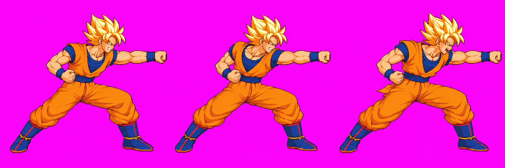

Beam clash struggle poses — round 3
TECHNICAL HOLD · SOURCE ONLY · NOT APPROVED
This page shows Goku’s ground-only beamStruggle_v01 drawing. The selected attempt uses a deep forward lunge, an empty forward fist, and a braced rear leg. Three image-generation calls were used; the cumulative call budget is exhausted. No air strip was requested or generated. This candidate has no approval recommendation.
Selected attempt 03 — original tool output (2172 × 724)

SHA-256: 9035EBC7B62956461469954A0ABCFA3C5CFA26FC110D76877FBC79BD551A3E98. The source is quarantined in the branch under art/characters/goku/raw/_qa_hold/beamStruggle_v01.png.
Wrapper-emitted payload (2048 × 683)
SHA-256: B0D6379DD5AEA8050DA172E07E03167A1C527A7107CDF670753C19C8A07CD6D5. This is a distinct resized payload. Pixel identity with the 2172 × 724 source is not asserted.
Generation record
The calls attached Goku’s approved idle_approved.png and assigned beamFire_v07.png pose reference. The latter is marked approved in the manifest while its sidecar labels it technical hold; it was used only as the assigned pose reference. Prompts asked for three right-facing ground poses (push, strain, surge), an empty fist, no VFX, and reference-matched anatomy.
| Attempt | Call ID | Output SHA-256 | Selection note |
|---|---|---|---|
| 01 | call_0b73139b56574231939bd49a1cfd5575 | EC2122479AA2155A12FB810F04D81F5793264BF9785A478CEF334A67FDC1452E | Discarded: frame 2 arm/body anatomy and loop were less clear. |
| 02 | call_ef7231793395490baa96f5b14621d868 | A41481D130CCAC3D187864603DED9115057A5DC70D5AFC20C1CD0C6581C34A4E | Discarded: less deep lunge and weaker pose loop. |
| 03 | call_558663b69d644a799bd65d7b01fd9b7b | 9035EBC7B62956461469954A0ABCFA3C5CFA26FC110D76877FBC79BD551A3E98 | Selected: deepest lunge and clearest braced loop. |
Call/output timestamps from the agent session log, UTC: 23:03:17 / 23:03:39; 23:03:43 / 23:03:59; 23:04:12 / 23:04:34. The exact prompts, reference paths, and call record are preserved in the task branch.
Technical findings
- Body height remains 233, copied as the first guess from approved
beamFire_v07. It has not been validated anatomically for this lunge. - Strict 48-color pack at bodyHeight 233 failed and wrote no atlas frames: right-edge clipping was 11, 12, and 18 px for frames 0–2. Raw v01 is quarantined.
- Goku’s automatic head probe is known to misread approved art. No version-bound manual landmark audit or numeric head-scale pass exists for this candidate.
- Head, torso, limb lengths, and clothing volume have not been fully compared against approved idle and title-style combat cells. Clipping must not be “fixed” by unverified body-height tuning.
- Front-knuckle hand position was not measured per frame. No hitbox override was authored.
- No packed candidate, body sheet, scale report, final-atlas Astra audit, or user approval exists for Goku v01.
Other round 3 audit status
The parallel Astra audit reports visible PASS for Naruto, Killua, and Gojo ground strips; Sasuke ground anatomy is HOLD. Air-loop holds: Sasuke, Killua, and Gojo; Sasuke also has occluded-length uncertainty. These findings do not certify visual approval. Goku’s final-atlas audit remains pending because no atlas was produced.